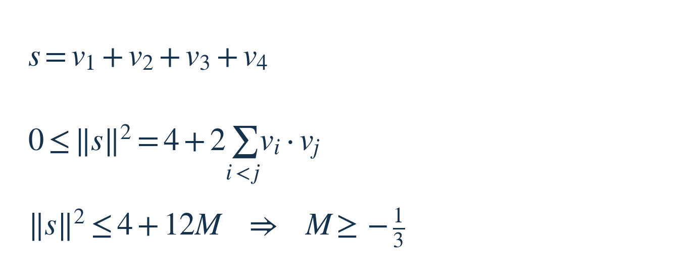
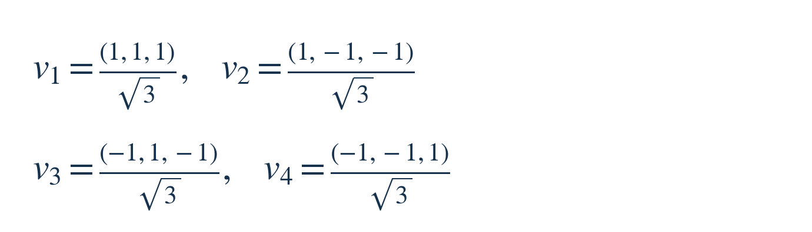
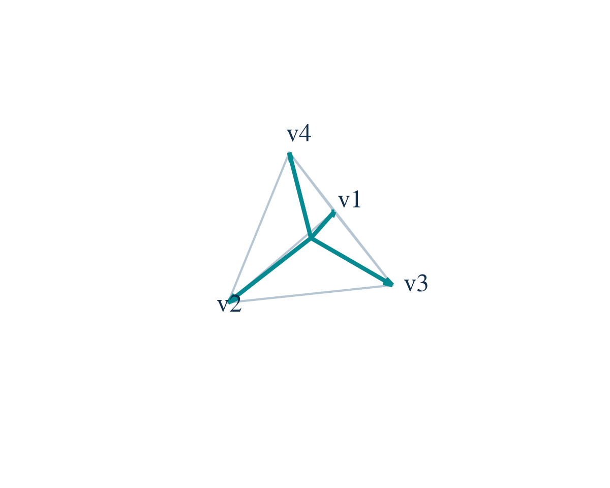
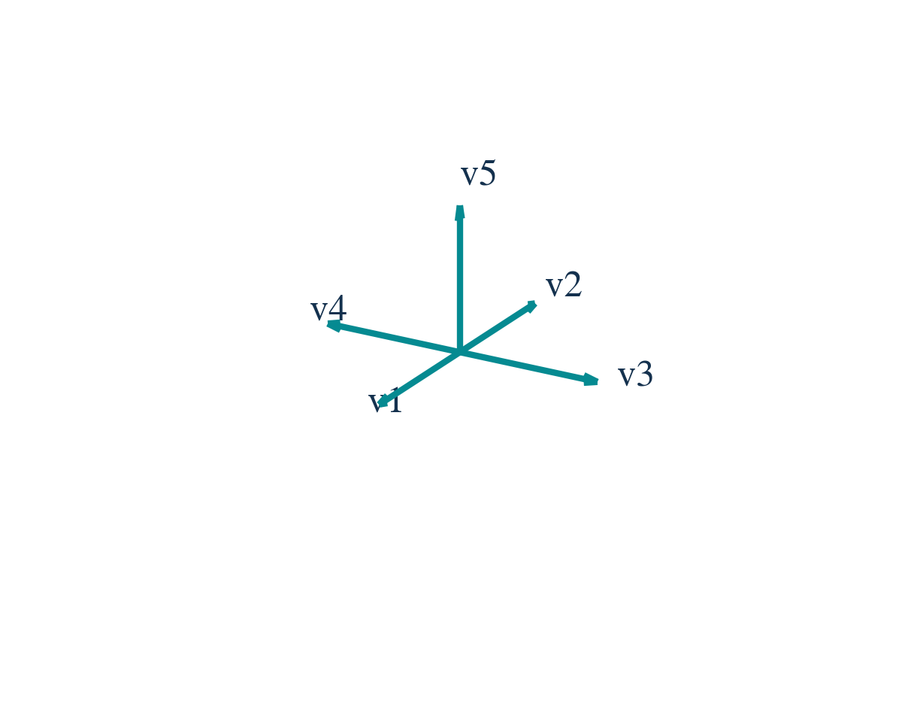
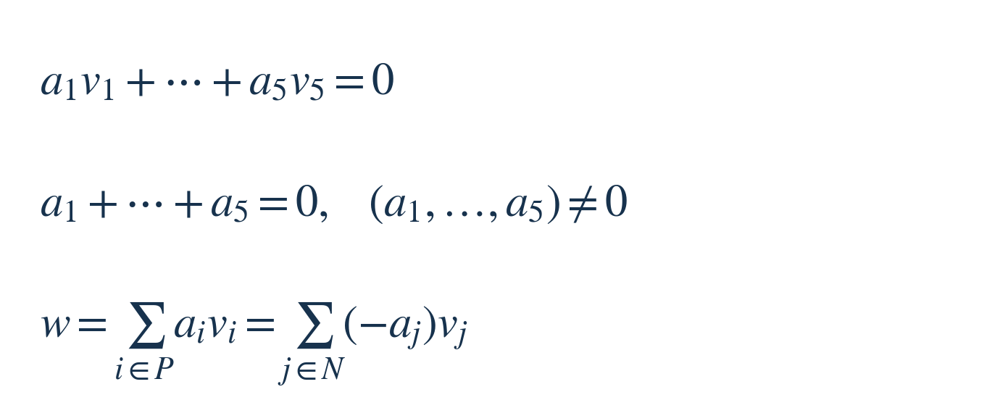
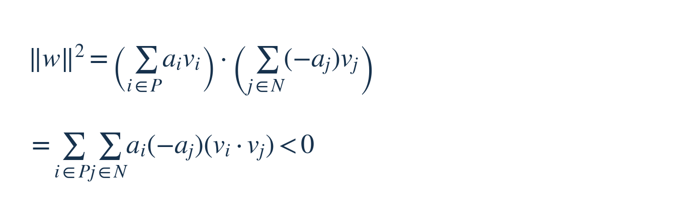

每周探索 · 每周面试挑战 003
在三维空间里，怎样把几个方向尽量分开？
线性代数与几何 · 中等偏难
2026 年 10 月 10 日｜建议思考 25–35 分钟；解答阅读约 8 分钟
这次从“随机等待”和“有损耗的测试策略”转到空间中的方向安排。只需内积、向量长度和线性方程组；不要求预先知道球面编码。题干为经典几何问题的原创组织，不对应某家公司的已核实面试题。
主问题｜安排四个方向
从同一个原点发出四根长度为 1 的箭头，方向可以在三维实数空间中自由选择，记作 v₁、v₂、v₃、v₄。每根箭头都可以重新安排，允许相反方向，没有其他限制。
两个向量的内积记作 vᵢ·vⱼ：把对应的三个坐标分别相乘，再相加。由于长度都是 1，内积等于夹角的余弦；同向为 1，垂直为 0，反向为 −1。这里保留内积的正负号，不取绝对值。
将六对不同箭头的内积中，最大的那个数记作 M。最大内积对应最小夹角，我们希望把 M 尽量压低，让最靠近的一对也尽量分开。
请找出 M 的最小可能值，给出一组达到它的坐标，并证明任何其他安排都无法更好。目标是确定性的最优值，不涉及随机抽样或平均情形。
追问｜改成五个方向
现在改为自由选择五个三维单位向量，可重新安排全部五个方向，并非固定刚才的四根箭头后只添加一根。仍最小化所有不同向量对的最大有符号内积。最优值是多少？同样需要下界与可达构造。
下面开始提示。如果想独立思考，可以先停在这里。
三级提示｜按需往下看
提示 1：先找一个对任何安排都成立的限制。向量相加后，长度的平方不可能是负数。把这个平方展开，会出现哪些两两内积？
提示 2：四根箭头共有六对。用它们的最大内积限制总和，得到一个候选下界；再想怎样让所有内积相同，并让四根箭头的和为零。
提示 3：追问要额外利用“三维”这个限制。给每个三维向量补一个坐标 1，得到五个四维向量；它们必有一组非零的线性依赖系数。按系数正负分组，看看“两组正权向量和相等”与“跨组内积全为负”能否同时成立。
完整解答，想好再看
1｜把六个内积放进同一个式子
令 s 为四个向量的和，‖s‖ 表示它的长度。计算 s·s 时，每个向量与自己的内积为 1，一共有四项；每对不同向量出现两次，例如 v₁·v₂ 和 v₂·v₁ 相等。因此：


图中 i<j 表示每对只算一次。六个内积各自不超过 M，所以总和不超过 6M；再乘 2，就出现 12M。因为 4＋12M 还要不小于一个非负数，它必须非负，移项后得到 M≥−1/3。
这是对全部可行安排的下界，还不是最优值已经实现。要取到等号，需要两个条件同时满足：四个向量的和为零，六个内积全都等于 −1/3。接下来按这两个条件找构造。
2｜用一组坐标实现下界
取立方体中下面四个顶点方向，再除以 √3，把每根箭头缩成单位长度：




浅色线围出一个正四面体。图是三维结构的二维投影，纸面上看到的角度会失真，计算以坐标为准。
每个向量的长度平方是 (1＋1＋1)/3＝1。任取两个，恰好有一个坐标同号、两个坐标异号，所以内积都是 (1−1−1)/3＝−1/3。每列正负各出现两次，四向量之和也确实为零。
例如 v₁ 与 v₂ 的内积是 (1×1＋1×(−1)＋1×(−1))/3＝−1/3。其余五对同理。于是这个构造达到下界，主问题的最优值就是 −1/3。对应的每对夹角约为 109.47°。[1]
3｜追问：先找到一个可行安排
把五个方向安排为：v₁＝(1,0,0)，v₂＝(−1,0,0)，v₃＝(0,1,0)，v₄＝(0,−1,0)，v₅＝(0,0,1)。也就是第一、第二坐标轴各取正反两向，第三坐标轴只取正向。


两对反向箭头的内积为 −1，其余八对为 0，因而最大内积为 0。这证明我们至少能把目标做到 0，也就是最优值不大于 0。还要证明不可能把所有内积都做成负数。
若照搬前面的求和平方，五个向量只会给出 M≥−1/4。这个界太宽，尚不能排除 −0.1 之类的数。缺的限制正是空间维度：接下来把“三维”用进证明。
4｜为什么五个方向不可能两两都是钝角？
反设十对内积全部小于 0，也就是每两根箭头的夹角都大于 90°。我们要从这个假设推出矛盾。
把每个 vᵢ 的三个坐标后面补上 1，得到五个四维向量 (vᵢ,1)。四维空间最多容纳四个线性无关的向量，所以存在不全为零的五个系数 a₁ 到 a₅，使它们的加权和为零。前三个坐标给出向量关系，最后一个坐标给出系数和为零：


这里 P 是 aᵢ>0 的下标集合，N 是 aⱼ<0 的下标集合。零系数直接略去。由于系数不全为零、总和却为零，正系数和负系数一定都存在；否则不可能相消。
把负系数项移到另一边，便得到图中第三行：两组正权重的向量和等于同一个向量 w。右边的 −aⱼ 是正数。现在用左边的表示与右边的表示做内积：


逐项看符号：aᵢ 与 −aⱼ 都大于 0；P、N 没有公共下标，因此 vᵢ 和 vⱼ 是不同向量，它们的内积按反设小于 0。两组又都非空，所以右侧是至少一个严格负数的总和，必然小于 0。
左侧却是长度平方，永远不小于 0；即使 w 恰好为零，也仍然矛盾。因此反设不成立：任何五个三维单位向量，总有一对内积≥0，也就是最大内积至少为 0。
这一必要下界与上一节的可行构造相遇，故追问的最优值为 0，最小夹角可以做到 90°。五向量的构造不必唯一，本题只要求找出一组。
方法与适用边界
主问题先把局部的两两关系合并成一个非负量，再找让所有不等式取等号的构造。追问则补上维度约束：未知系数比线性约束多，产生非零依赖；正负分组把这条依赖变成可以检查符号的等式。这种分组也是 Radon 引理证明的核心步骤。[2]
两处常见错误：
① 找到一个漂亮摆法就宣布最优。可行构造只说明“能做到”，还需要证明其他摆法不可能更好。
② 把负内积也当作需要惩罚的“相关”。本题优化有符号内积，反向的 −1 比垂直的 0 更小；若优化内积的绝对值，反向又会变成 1，题目和答案都会改变。
结论依赖欧氏内积、单位长度，以及追问允许全部重新安排。不要把它直接当成真实推荐向量的最佳布局：这里没有表达语义、频率或训练损失的约束。坐标与全部 6／10 对内积已精确核对；最优性由上面的下界和构造证明，不靠随机试验。
来源与选读
题面、例图和讲解为本期重新组织，未声称出自真实公司面试。以下资料用于核对数学背景：
[1] Böröczky 等：Stability of the simplex bound…，§1、表格与 Theorem A。作者公开论文核对正单纯形的最优球面间隔；本期只用四面体这一特例，不涉及论文中的稳定性定理。
[2] ETH Zürich：Some Basic Geometry，Lemma 1.5.2。可进一步阅读“线性依赖→按正负分组→两组凸组合相等”的证明。本期把未归一化的两组和直接用于内积判号。